You can also merge branches in the
Log page or
Status page.
You can also merge branches in the
Log page or
Status page.
The Repositories page allows you to view and manage the Git repositories associated with your Orion account. When you visit this page you will see a list of all Git repositories you currently have cloned.
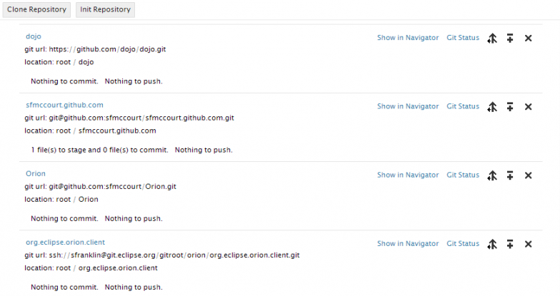
To see detailed information about a repository, click its name.
The detailed view includes all the usual Git repository details such as name and url. Additional sections on the page enumerate things like index state, incoming and outgoing commits, branches, and tags. You can open and close most sections on the page using the twistie icon adjacent to the section name. The branches and tags sections show you the most recently used items, but you can click the associated View All links to see full lists of anything.
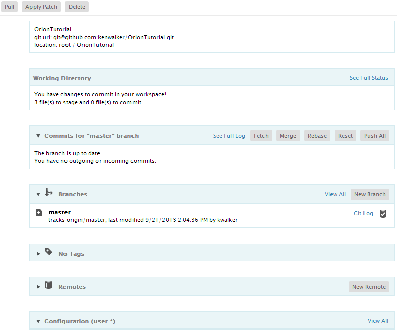
The bottom of the repository page shows the configuration of the repository. On the main page you will see just user.*. To see the full list, click View All. From here you can add additional configuration properties to the repository, and change or delete properties.
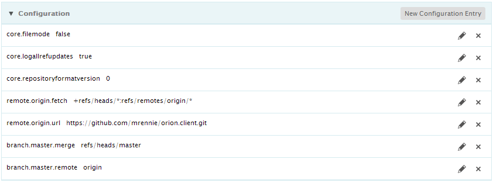
Create a new empty repository by clicking Init Repository on the tool bar, or click Clone Repository to clone an existing Git repository. Cloning will produce a dialog where you enter the Git repository URL, and optionally any credentials required to access or modify the repository.
You can pull the latest content, apply a patch, or delete an existing repository from the main toolbar on the page. The Related Links menu allows you to navigate to other views on the repository, such as viewing the repository content on the Navigator page or working with the repository changes on the Git Status page.
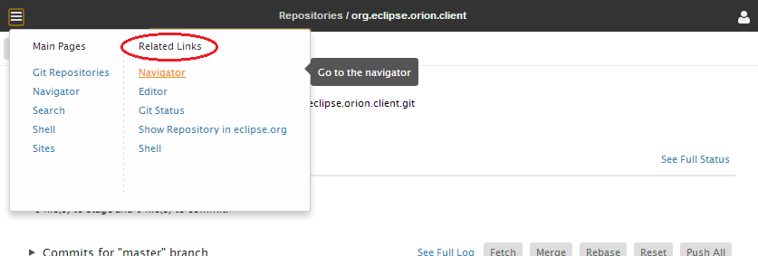
You can use the Branches section of the page to work with different branches.
Once a repository is created or cloned, the master branch is set as the current branch. You can create your own branch, work on it and merge it back to master. To create a new branch, click the New Branch button, type in the new branch name, and press the 'Enter' key or click the Submit button.
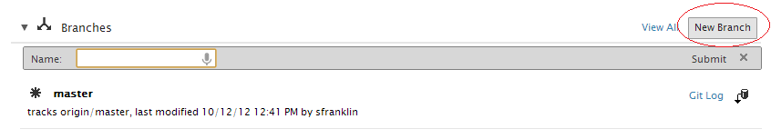
Once a new branch is created, it is in the local repository but not in the remote yet. Next to each branch is a row of buttons as below. You can manage the branches using these actions.
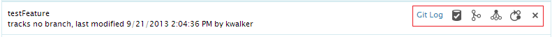
From the branch actions, click the delete icon to delete a local branch. A confirmation dialog will pop up, providing you a chance to confirm your decision.
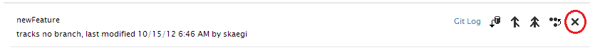
You can navigate to the Log page to see details on the branch. From the actions next to the branch, the link Git Log will take you to the Git log page.
Merging branches involves two branches: the branch whose actions you are working with, and your active branch. For example, clicking the Merge icon for your newly created branch will merge its content to your active branch. You can also merge from remote branches.
You can also merge branches in the
Log page or
Status page.
The active branch is the branch that contains your working copy. When you create a new branch, it is not automatically set as the active branch. Suppose you created this branch to start work on a new feature. From the actions next to the branch, click on the checkout icon to make the branch active.
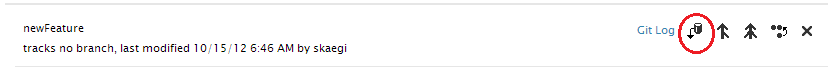
Once a branch is checked out, it is shown as bold and highlighted with a star.
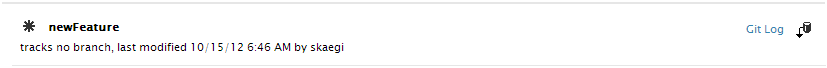
The active branch represents your working directory, and therefore the Git Status page will always reflect the status of the active branch.
Once a branch is checked out, a list of the commits for that branch will appear. Arrows next to the commits will indicate if the commits are incoming or outgoing. Clicking on the Push All action will push all the commits to a remote tracking branch.
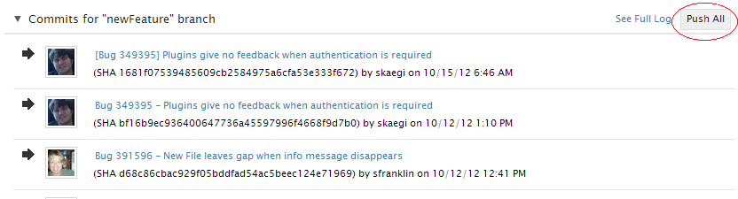
For a newly created branch, you can choose an existing remote branch, or more likely, create a new remote tracking branch for your work.
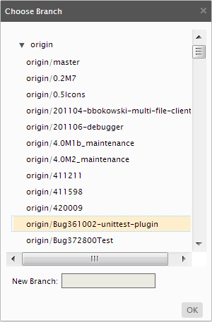
You can also push changes and create remote branchs from the Log page or Status page.
Clicking the View All link in the branches section of the page will show all of the branches for a repository, including the remote branches.
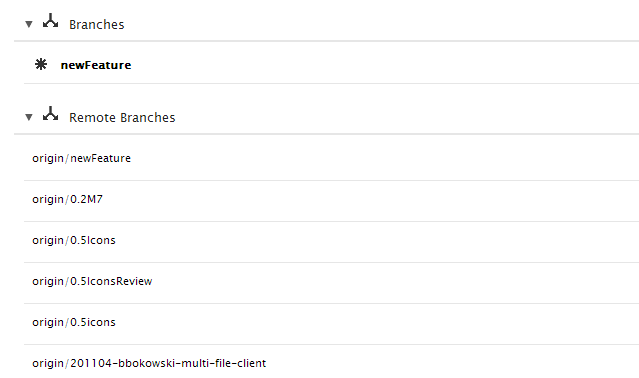
When someone creates a new remote branch in a repository, the branch will not appear in the branch list for other users until the repository is fetched or pulled. For example, if you ask another developer to check out your "newFeature" branch, the branch will not appear if the repository hasn't been fetched or pulled since you created the branch.
You can click Pull in the main toolbar, and enter your credentials if required to access the repository. The remote branches will be updated.
Many of the actions on a remote branch are different from those on a local branch, but the Git Log and Merge actions are the same. The Git Log action will navigate to the same log page but with the remote branch content. (You can switch to the local branch content from the log page). All of the actions applicable to remote branches appear in the remote branch list, adjacent to the branch.
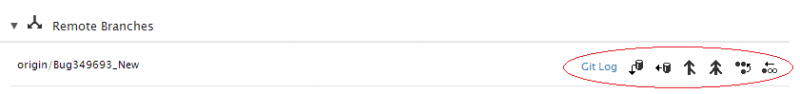
To work with the content of a remote branch, you need to check out the remote branch.
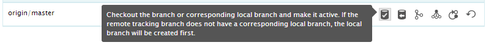
This will create a local branch if you don't already have one, and make that your active branch.
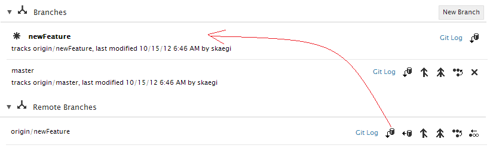
If you try to check out a remote branch that already has a local branch in your repository, you will get a warning message : "the local branch already exists". In this case, you should check out the local branch and fetch the remote, rather than check out the remote branch.
When working with a remote branch, you can ensure you have the most current content by fetching the branch in the remote branches list. (You can also pull the repository from the main toolbar which will fetch all branch content.)
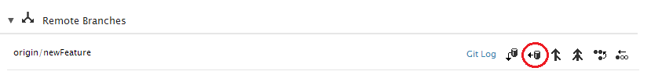
Once fetched, you can merge the content of the branch into your active branch. Using the merge button will merge all commits from the remote into the active branch. Using the squash button will squash all changes into a single commit and then merge them into your active local branch. Using the rebase button will rebase the changes in your active local branch on top of the content of the remote branch, so that your local commits will appear as if they were applied to the latest state of the remote branch..
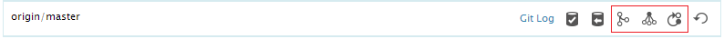
If you are working exclusively with your active branch (and remote tracking branch), you can also use actions in Commits section to fetch, merge, rebase, and push changes as you work.
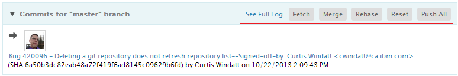
You can also replace the contents of a local branch with the state of the remote branch by using the reset command on the remote branch.
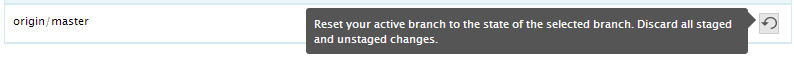
A dialog will pop up asking for confirmation.
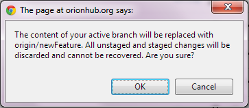
This document is maintained in a collaborative wiki. If you wish to update or modify this document please visit http://wiki.eclipse.org/Orion/Documentation/User_Guide/Reference/Repositories_page